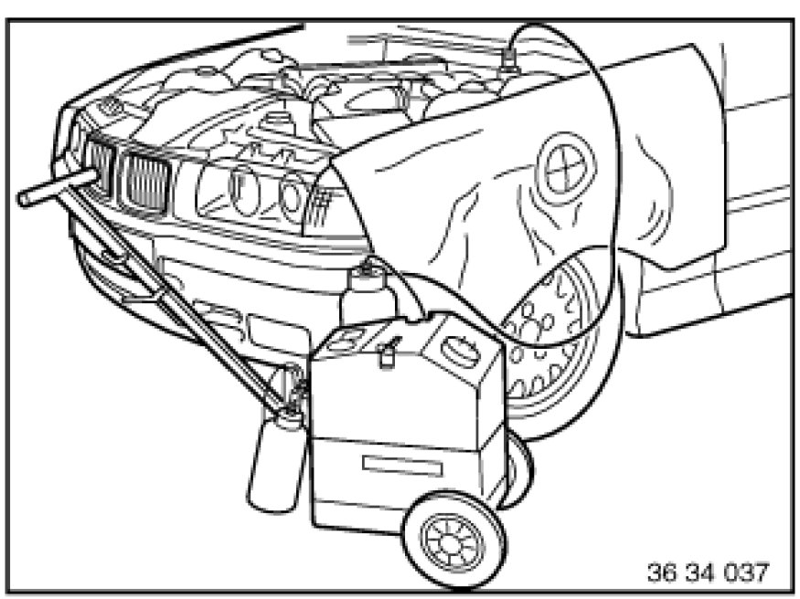
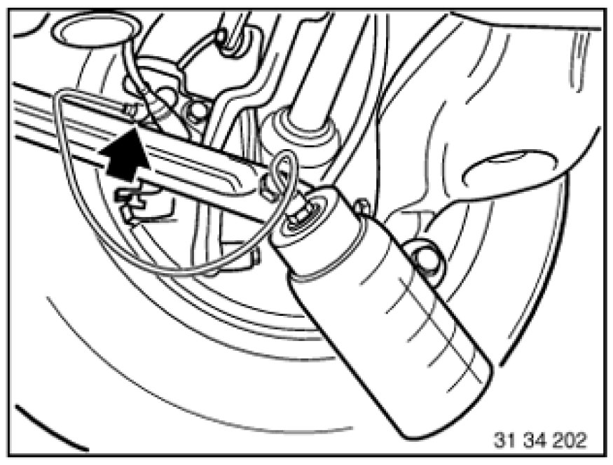
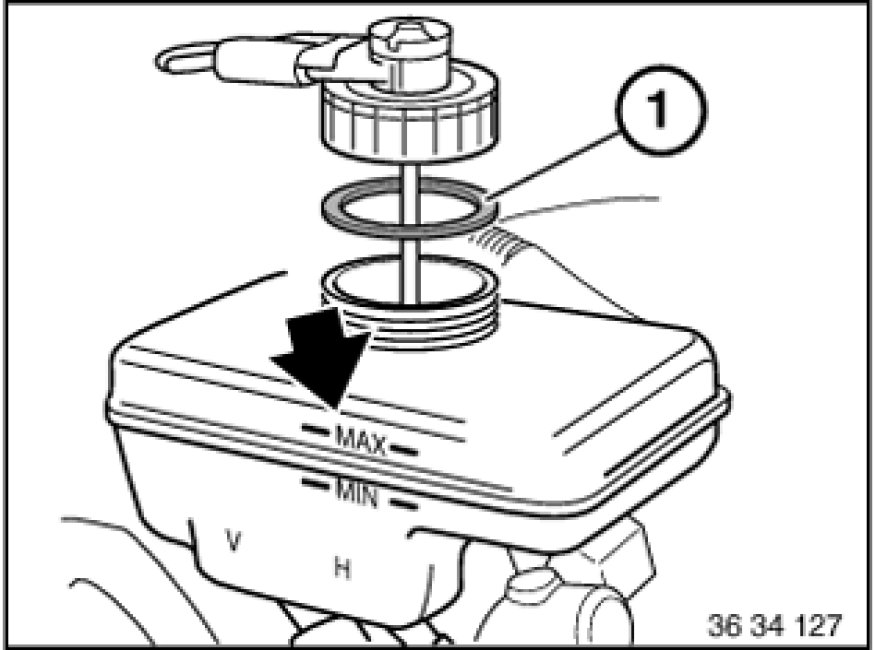

Replacing Fluid in ABS/ASC+T Brake System
34 00 025 - Replacing fluid in ABS/ASC+T brake system

Note:
Read and comply with General Information Service and Repair.

Important!
When carrying out repairs to the brake system, follow the procedure set out in Bleeding brake system with DSC Bleeding Brake System with DSC.

Connect brake fluid changer to expansion tank and switch on.
Note:
Check relevant Operating Instructions for each device.
Charging pressure should not exceed 2 bar.

Flushing brake system completely
Connect bleeder hose with collecting tray to bleeder valve on rear right brake caliper.
Open bleeder valve and purge until clear, bubble-free brake fluid emerges.
Close bleed valve.
Follow same procedure on rear left, front right and front left wheel brake.
The clutch slave cylinder must also be scavenged in vehicles with manual transmissions.

Switch off brake fluid changer and remove from expansion tank.
Check brake fluid level. If necessary, top up/draw off to max. level.
Close expansion tank.
Note:
Pay attention to rubber seal (1) in sealing cap.